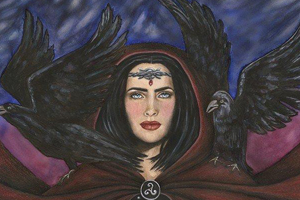
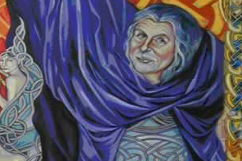
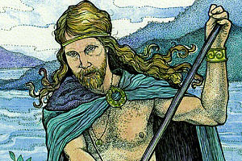

|  | The Morrigan, or Morigu, was the name for a 3-part goddess of the Earth who protected it's inhabitants. She was also the goddess of death and doom, and appeared as a crow in battle to foretell an ill fate. |
|  | The Dagda was the 'father god', one of fertility, agriculture, strength and masculinity, as well as magic and wisdom. |
|  | Manannan was the god of the sea. He ferried souls to the other world after death. |